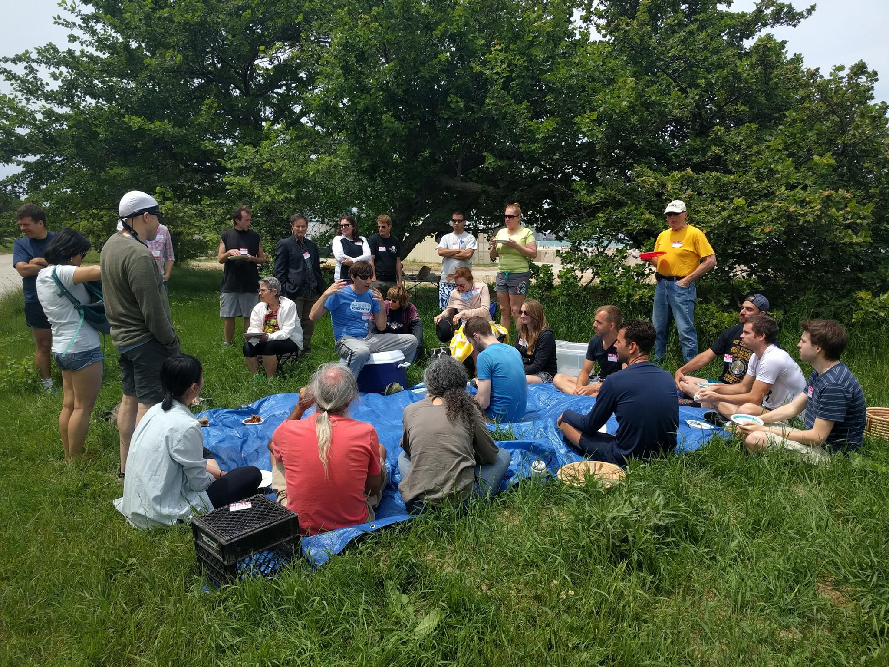

Vegetarian Potluck Rules
A potluck means that everyone brings some food/drink to share. Below are ChicagoVeg guidelines for our potlucks. If you are coming without any food (bringing a bag of potato chips is not an option) please contact potluck organizer first.
- You should bring enough food or beverage to serve at least 6 people. The vegetarian food you bring can be prepared by you or bought from a store/restaurant as long as you know ALL the ingredients.
- Mark a vegetarian food that you bring:
- . "D" if it contains any any animal products (dairy, eggs, honey, etc.), "V" if it's totally Vegan (no animal products), "R" for Raw Vegan food.
- Please list ingredients in case someone has some allergies.
- . Put your name – someone may want to ask you for the recipe or have other questions.
- To better accommodate others please consider bringing totally Vegan food (no animal products) or event Raw food if possible.
- As you RSVP add a note with a short description indicating what you plan to bring (don't bring something that many others plan to bring)
- Bring serving utensils for your dish and tableware (whatever you/your guests may want to use).
- No tobacco, alcohol, or other intoxicants please. If any questions see: No Intoxicants Policy
- For outdoor potlucks you may wish to consider bringing the following: folding chair, blanket, sunscreen, swimsuit (for tanning or swimming), balls, frisbees, or any other games you would like to play with others.
Please contact us with any additional questions or concerns.